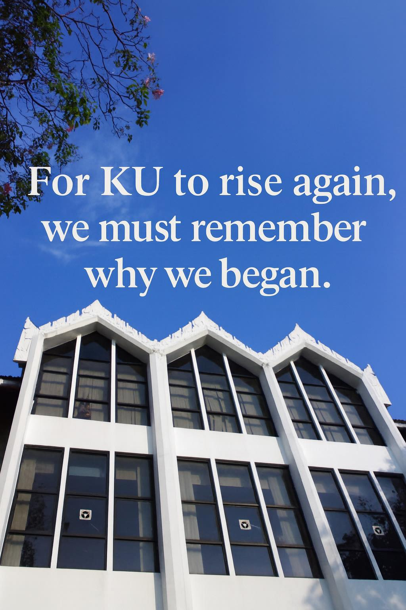

ถ้า KU ยังอยากกลับไปเป็นมหาวิทยาลัยชั้นนำด้านการเกษตร เราต้องแยกให้ออกก่อนว่ากำลังหลงทาง หรือแค่ติดเกาะอยู่กับข้อจำกัดของตัวเอง
{kind=link}

โพสต์นี้เริ่มจากการยอมรับอย่างเรียบง่ายว่า ผู้เขียนเพิ่งนึกได้ว่าอายุงานของตัวเองสูงสุดในภาควิชาแล้ว และอีกไม่นานก็คงเกษียณ แต่แทนที่จะใช้จังหวะนี้พูดถึงชีวิตส่วนตัว เขากลับพาเรื่องไปสู่คำถามใหญ่กว่านั้นคือ KU จะเป็นอย่างไรในอนาคต
แกนของบทความชัดมากคือความหวังว่า KU ควรกลับมาเป็นมหาวิทยาลัยอันดับหนึ่งของโลกด้านการเกษตร หรืออย่างน้อยที่สุดก็ต้องเป็นอันดับหนึ่งของประเทศหรือภูมิภาคให้ได้ จากนั้นผู้เขียนใช้ภาพเปรียบเทียบเรื่อง “หลงทาง” และ “ติดเกาะ” เพื่อชวนให้มององค์กรอย่างซื่อตรงขึ้น
จุดเด่นของบทความนี้คือการใช้ภาษาง่ายมากกับโจทย์เชิงยุทธศาสตร์ที่ซับซ้อน ผู้เขียนไม่ได้เริ่มจาก KPI หรือแผนยุทธศาสตร์ยาวหลายหน้า แต่เริ่มจากคำถามตรงที่สุดว่า เราอยากให้ KU เป็นอะไร และตอนนี้สิ่งที่เรากำลังทำอยู่พาเราเข้าใกล้เป้าหมายนั้นหรือไม่
การหลงทางกับการติดเกาะคือปัญหาคนละแบบ และการรักษาที่ผิดอาจทำให้องค์กรเสียเวลาไปอีกนาน
ผู้เขียนแยกความหมายของ “การหลงทาง” ว่าเป็นการยังหาทางไปสู่เป้าหมายไม่เจอ ส่วน “การติดเกาะ” คือการหาทางจนหมดแล้ว แต่ไปต่อไม่ได้เพราะติดข้อจำกัดบางอย่าง ความต่างนี้สำคัญมาก เพราะมันบอกว่าองค์กรอาจไม่ได้มีปัญหาแบบเดียวเสมอไป บางครั้งเราต้องการเข็มทิศใหม่ แต่บางครั้งเราต้องการการปลดล็อกข้อจำกัดที่รู้อยู่แล้ว
ถ้าไม่แยกสองภาวะนี้ให้ออก องค์กรอาจใช้พลังจำนวนมากไปกับการเดินต่อแบบไม่รู้ด้วยซ้ำว่าควรหาทิศหรือควรแก้กรงที่ขังตัวเองอยู่กันแน่
การเดินอยู่เรื่อย ๆ ไม่ใช่หลักฐานของชัยชนะ ถ้ายังไม่รู้ว่าเป้าหมายเป็นของใคร
หนึ่งในประโยคที่คมที่สุดของโพสต์คือการเตือนว่า เราอาจเพียงเดินไปเรื่อย ๆ อย่างอมทุกข์ ไม่มีเป้าหมาย ไม่มีความหวัง และหลอกตัวเองว่าเดินนำหน้าคนอื่นเพียงเพราะยัง “กำลังเดินอยู่” ทั้งที่ไม่รู้ด้วยซ้ำว่าเส้นทางนั้นเป็นเป้าหมายของใคร
นี่เป็นคำวิจารณ์เชิงองค์กรที่แรงมาก เพราะมันชี้ว่า activity หรือ movement ไม่เท่ากับ progress หากองค์กรขาด both direction และ ownership ของเป้าหมาย
ทางออกอาจเริ่มจากการจำให้ได้ว่าเราเริ่มต้นแต่ละสิ่งเพื่ออะไร
ตอนจบของโพสต์นี้ไม่ได้เสนอสูตรสำเร็จ แต่เสนอหลักคิดพื้นฐานที่สุดว่า ถ้าเรายังจำได้ว่าเราเริ่มต้นแต่ละสิ่งในชีวิตเพื่ออะไร เราก็จะรู้เองว่าอะไรคือสิ่งที่ควรทำ และอะไรคือสิ่งที่เหมาะสม นี่เป็นการดึงบทสนทนากลับจากระดับเทคนิคหรือแผนปฏิบัติการ ไปสู่ระดับ ความหมายของภารกิจ
สำหรับมหาวิทยาลัย นี่อาจเป็นคำเตือนที่สำคัญที่สุด เพราะองค์กรที่ลืมเหตุผลของการเริ่มต้น ย่อมมีแนวโน้มสูงที่จะหลงทางหรือไม่ก็ติดเกาะโดยไม่รู้ตัว